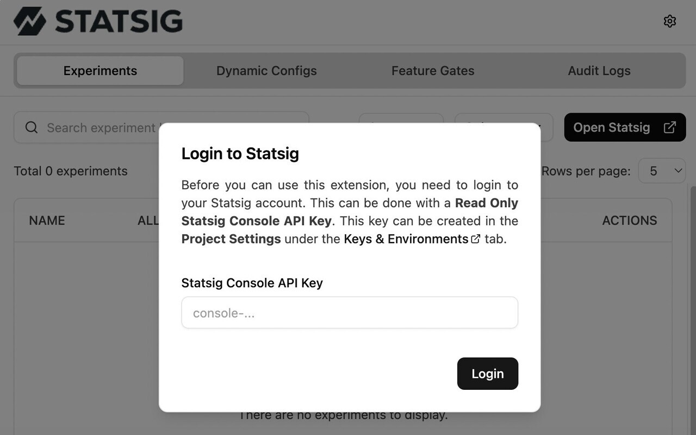
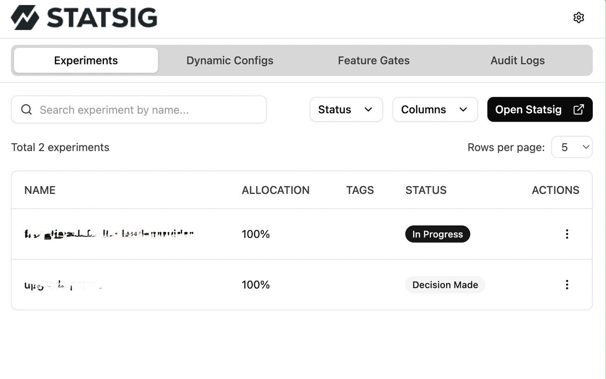
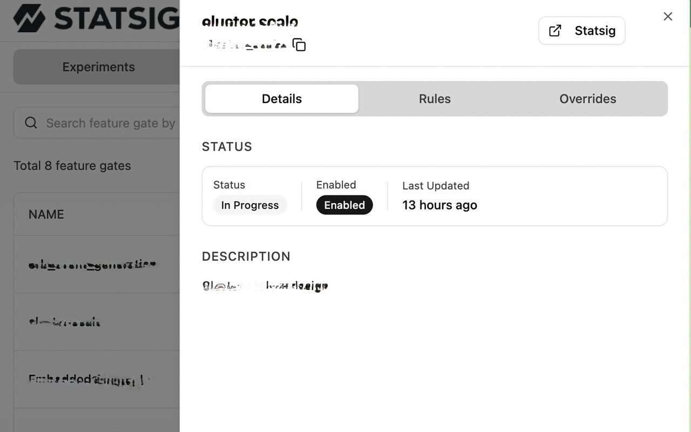
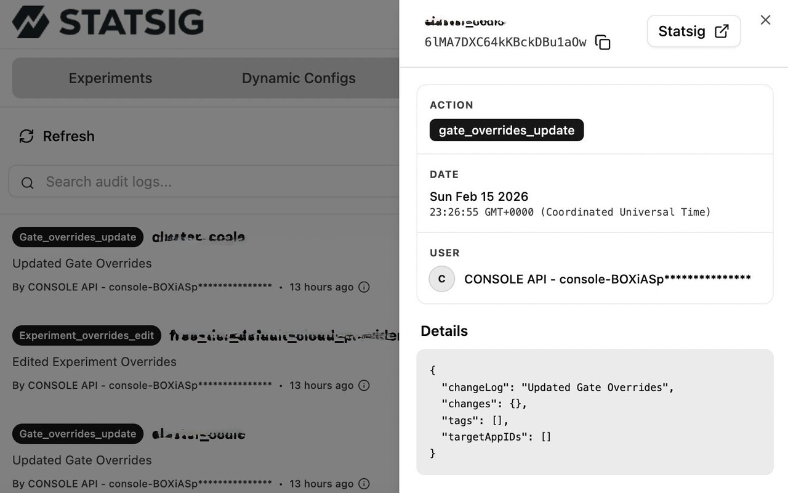

Debug Statsig without leaving your app
Inspect feature gates, experiments, and dynamic configs in real time. Apply controlled overrides, review audit history, and ship with confidence — all from your browser toolbar.
Everything you need to debug with confidence
From inspecting SDK state to forcing experiment variations — all without touching the dashboard or your codebase.
Feature Gates
View gate status, evaluation rules, and health checks. See why a gate returns
true or false for the current user, including rule matching and context details.
Experiments
Monitor active experiments, view hypotheses, and force specific variations to verify UI changes on the fly.
Dynamic Configs
Inspect evaluated config values, their rules, and the underlying JSON structure delivered by Statsig.
Audit Logs
Session-based activity trail with filtering by user, action type, and time. Track who changed what and when.
User Details
View the full Statsig user object — UserID, Stable ID, email, country, locale, environment tier, custom properties, and private attributes.
Override Management
Create, edit, and remove overrides for gates and experiments. Supports user-level, environment-level, and account-level scopes.
Search & Filter
Real-time fuzzy search across all entities. Persistent table state with sorting, pagination, and column visibility.
Environment Switching
Toggle between Statsig environments (production, development, staging) directly from the extension UI.
Health Checks
Visual health indicators on gates showing SDK evaluation status and pass/fail checklist for each gate.
See it in action
From initial setup to detailed entity inspection — every screen is designed for speed and clarity.




Built for product teams
Whether you're shipping code, managing experiments, or validating releases — this extension fits your workflow.
Developers
Debug SDK integration, verify gate evaluations, and test overrides without redeploying or switching context.
Product Managers
Force experiment variations, review hypotheses, and validate feature rollouts across environments in real time.
QA Engineers
Audit feature flags, track changes via audit logs, and verify edge cases across different user contexts and environments.
Ready to ship faster?
Install the extension and start debugging Statsig in seconds.